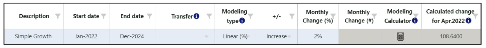

Adicionar/editar nó
- modelagem/transferência
Objetivo
:Se um nó mudar ao longo do tempo, um usuário pode utilizar a
guia Modelagem/Transferência para modelar
o crescimento/perda em um único nó ou uma transferência de um nó para outro.
Observe
que essa funcionalidade está disponível apenas para nós de número (#) e nós
de
porcentagem (%) (incluindo unidades de previsão e unidades de planejamento).
Usando
esta guia :
Os usuários podem manualmente insira quaisquer alterações desejadas
ao longo do tempo (crescimento/perda/transferência) no topo
tabela, ou eles podem utilizar o
Calculadora de Modelagem para calcular a
taxa mensal de
alteração (consulte a seção 'Calculadora de modelagem' abaixo para obter
mais informações). Cada entrada deve ser adicionada como linhas separadas
por alteração na tabela superior
(ou seja, um nó não pode crescer e ser transferido em uma linha de entrada
de dados - devem ser duas linhas separadas).
Regras
para nós de transferência:
- Os nós numéricos só podem ser transferidos para outros nós numéricos e
devem pertencer ao mesmo nível.
- Os nós percentuais só podem ser transferidos para outros nós percentuais
e devem pertencer ao mesmo pai.
- As transferências são sempre negativas do nó de origem e positivas para
o nó de destino.
- A extrapolação não é permitida em um nó que também tenha uma
transferência, seja de/para outro nó.
| Tipo de modelagem |
# Cálculo do Nó |
% Cálculo do Nó |
| Linear (#) |
+/- um número estático a cada mês |
N / D |
| Linear (%) |
+/- uma porcentagem estática a cada mês, calculada com base
no mês inicial |
N / D |
| Exponencial (%) |
+/- uma porcentagem a cada mês, calculada no mês anterior
como uma porcentagem contínua |
N / D |
| Linear (% point) |
N / D |
+/- uma porcentagem estática a cada mês (por exemplo, se o
mês inicial for 30% e a alteração for +1% a cada mês, o
próximo mês for 31%, o próximo for 32% e assim por diante)
|
- Clique em "Mostrar dados mensais" para mostrar uma tabela e
gráfico com o nó
valor ao longo do tempo
-
Este recurso é útil para ver como modelar e transferir
as entradas afetam os dados mensais em forma gráfica e tabular.
-
Nos dados tabulares, os usuários podem adicionar uma alteração
manual para um
mês específico ou inserir uma porcentagem do índice de
sazonalidade
(disponível apenas para # nós), conforme necessário.
-
Se um usuário marcar “A alteração manual afeta o mês futuro”, o
valor manual adicionado ao final do
mês será transferido para o início do mês seguinte. Se nenhum
destes
campos são relevantes, os usuários podem desmarcar “Mostrar
(sazonalidade e) alteração manual” para
ocultar essas colunas.
Exemplos
:
- Crescimento Simples (linear #) - o exemplo abaixo mostra um
crescimento populacional a cada mês em 500/mês de janeiro de 2022 a
dezembro de 2024.

- Perda Simples (linear #) - o exemplo abaixo mostra o atrito a
cada mês em 100/mês de janeiro de 2022 a dezembro de 2024. QAT utiliza
um número negativo para denotar uma diminuição ou perda.

- Crescimento Simples (linear %) - o exemplo abaixo mostra um
crescimento populacional constante de 2% a cada mês de janeiro de 2022 a
dezembro de 2024. A QAT calculou que essa mudança está aumentando a
população em 108,64 a cada mês.

- Crescimento Simples (exponencial %) - o exemplo abaixo mostra um
crescimento populacional de 1% a cada mês de janeiro de 2022 a dezembro
de 2024. Como o crescimento é exponencial, a mudança é diferente a cada
mês.

- A QAT calcula que essa mudança seja de 54,32 em janeiro-22 mês,
- A QAT calcula que essa mudança seja de 54,86 no mês de fevereiro
de 22 e
- A QAT calcula que essa mudança seja de 55,41 em Mar-22
-
Perda de vários anos - exemplo abaixo mostra uma taxa
diferente de atrito (perda) a cada ano. O ano 1 (janeiro de 2022 a
dezembro de 2022) diminui a população em 1% ou 54,32 a cada mês, o
ano 2 (janeiro de 2023 a dezembro de 2023) diminui
a população em 2% ou 95,6 a cada mês, etc. QAT utiliza um número
negativo para denotar um diminuição ou perda. 
-
Transferir - o exemplo abaixo mostra uma transferência de 250
pacientes por mês durante um ano, de janeiro de 2022 a dezembro de
2022, do nó atual (Adultos 1ª Linha) para outro nó (Adultos 2ª
Linha). Essa transferência também aparecerá
no outro nó (adultos 2ª linha) em cinza para significar uma
alteração não editável. 
Calculadora de
Modelagem:
Clique no ícone da calculadora de modelagem se precisar de ajuda para
calcular o
taxa de variação mensal. A calculadora de modelagem Valor/mudança
final
é
disponível para todos os nós, exceto nós de agregação, e a modelagem
calculadora Meta anual está disponível apenas para nós numéricos.
Comece por
selecione
um Tipo de modelagem (Linear #, Linear% ou Exponencial%),
e, em seguida, um Tipo de meta (Valor/mudança final ou meta anual):
- Valor/mudança final: use isto se você tiver um valor alvo
mudança (não cumulativa) ou total desejada durante um período
específico, em vez
do que uma taxa de variação mensal conhecida.
-
A Data de início e a Data prevista serão
preenchidas
com base no
entradas originais para data inicial e data final na modelagem
tabela, que por padrão são baseadas no período de previsão. O
o usuário pode alterá-los, se desejar. Essas duas datas
retornarão
na mesa de modelagem.
-
O Valor Inicial é o valor do nó no início do
mês para
a Data de Início, conforme calculada pelo QAT. Em outras
palavras, o início
Valor é o valor do nó antes de ocorrer qualquer alteração de
modelagem. Esse
campo é calculado e não pode ser alterado diretamente pelo
usuário.
Se a Data de Início for o mês após o “Mês” no Nó
Guia Dados, então o Valor Inicial é igual ao "Valor do Nó"
fornecido pelo usuário na guia Node Data.
-
Período é calculado como Data prevista - Data de início
(em
meses).
Este valor não é exibido no front-end do QAT, mas é usado
nas fórmulas abaixo.
-
Com base nos dados ou suposições disponíveis, insira os dados em
um dos
os seguintes campos: Valor Final Alvo, Valor Final
Alvo
Alterar (%) ou
Alteração de meta (#)
-
Após uma entrada ser fornecida, os outros campos serão
preenchido automaticamente, bem como o 'Calculated
Mudança mês a mês'.
-
Quando o usuário clicar em 'Aceitar', a alteração mensal (%
ou #) será
preenchido de volta na tabela de modelagem principal, com base
nas fórmulas
abaixo. Todas as alterações negativas serão exibidas como
“diminuir” e
mudanças positivas exibidas como “aumento”, com o número
mostrado
em valor absoluto.
Se o usuário inserir Valor Final Alvo:
|
Linear (%) |
Linear (#) |
Exonencial (%) |
| Alteração de meta (%) |
(Valor Final Alvo - Início
Valor) / Valor inicial |
| Alteração de meta (#) |
- |
Valor Final Alvo - Valor Inicial |
- |
| Alteração mensal calculada |
(Valor Final Alvo - Início
Valor) / Período |
| Alteração mensal (%) |
(((Valor Final Alvo - Valor Inicial)/
Período) / Valor inicial) * 100 |
- |
((Valor Final Alvo / Valor Inicial) ^ (1 /
Período) - 1) * 100 |
| Alteração mensal (#) |
- |
Alteração (#) / Período |
- |
Se o usuário inserir Alteração de meta (%):
|
Linear (%) |
Linear (#) |
Exonencial (%) |
| Valor final desejado |
Valor inicial + (Valor inicial *
Alteração de meta (%)/100)/100 |
| Alteração de meta (#) |
- |
Valor Final Alvo - Valor Inicial |
- |
| Alteração mensal calculada |
(Valor inicial * Alteração de
meta
(%)) / 100 / Período |
| Alteração mensal (%) |
(((Valor Final Alvo - Valor Inicial) /
Período) / Valor inicial) * 100 |
- |
((Valor Final Alvo / Valor Inicial) ^ (1 /
Período) - 1) * 100 |
| Alteração mensal (#) |
- |
Alteração de meta (#) / Período |
- |
Se o usuário inserir Target Change (#):
|
Linear (#) |
| Valor final desejado |
Valor inicial + alteração de meta (#) |
| Alteração (%) |
(Valor Final Alvo - Valor Inicial) / (Valor
Inicial
Valor * 100) |
| Alteração mensal calculada |
Alteração de meta (#)/Período |
| Variação Mensal (%) |
Alteração de meta (#)/Período |
-
Meta Anual: Use isto se você tiver valores-alvo (acumulados ao
longo de um ano). Em vez de
simplesmente dividindo as metas anuais por 12, o que cria um padrão
escalonado, ou seja, a calculadora
ajudará a fornecer uma previsão suave.

- Selecione o primeiro mês da sua meta e o número de anos
de metas disponíveis.
-
O QAT preencherá automaticamente as linhas anuais da
tabela com base no primeiro mês de meta escolhido,
assumindo que as metas são para períodos de 12 meses.
-
Na tabela, insira os números do ano anterior à meta (o real) e
de cada ano da meta.
-
Após a entrada dos dados, clique em “Calcular” (veja abaixo a
abordagem de cálculo e as fórmulas).
-
Revise as diferenças entre as metas desejadas e os números
calculados do QAT.
Se as diferenças forem grandes, considere se a taxa de mudança
segue uma linha linear ou
padrão exponencial e mudança
o Tipo de modelagem (Linear #, Linear% ou Exponencial%) e
recalcular se necessário.
-
Quando o usuário clica em “Aceitar”, o QAT preenche os valores
calculados em dois locais:
- Guia Valor do nó - Mês inicial e Valor inicial
- Guia Modelagem/Transferência - uma linha é criada por
período de 12 meses
após o valor inicial. Observe que estes não são os
mesmos períodos que
os anos-alvo (veja abaixo).
| Campo |
Explicação / Fórmula |
| Mudança Anual (%) |
Alteração em relação ao ano anterior. Calculado para cada
ano após o primeiro ano.
= (Valor do ano atual - Valor do ano anterior) / (Valor do
ano anterior) |
| Variação Mensal (%) / Variação Mensal (#)* |
Taxa exponencial = (valor do ano 2/valor do ano 1) ^ (1/12)
-1
Taxa Linear = Variação Anual / 12 |
| Mês do Nó** |
= n-7, onde n é o primeiro mês da meta. |
| Valor do nó** |
Assumido como o primeiro valor (o valor real) fornecido pelo
usuário dividido por 12, pois este é considerado o ponto
médio do ano.
= Valor do Ano/12
|
| Total calculado |
Começando com o Mês do Nó e o Valor do Nó e aplicando a
Alteração Mensal (% ou #), o QAT calcula cada valor mensal
e, em seguida, fornece somas dos valores em períodos de 12
meses.
|
| Diferença (alvo versus calculado, #) |
Calculado para cada ano após o primeiro ano real. Esta
diferença será grande se a variação anual variar
significativamente entre os anos.
= Total Calculado - Meta
|
| Diferença (alvo versus calculado,%) |
Calculado para cada ano após o primeiro ano real. Esta
diferença será grande se a variação anual variar
significativamente entre os anos.
= (Total Calculado - Meta) / Meta.
|
@Abordagem de cálculo de meta anual: QAT assume que 1/12 do
o valor real anual foi alcançado no meio do ano real,
e 1/12 das metas anuais serão alcançadas no ponto médio de cada
ano alvo. QAT então interpola efetivamente entre esses pontos médios
calculando uma taxa de mudança mensal linear ou exponencial. Este mês
taxa de variação é então aplicada a ambos os anos - a segunda metade do
primeiro ano e o primeiro semestre do segundo ano. Para conseguir isso, QAT
calcula os seguintes campos:
* Esses valores não aparecem na seção 'Calculadora de modelagem', mas são
preenchidos no nó de modelagem/transferência superior
tabela depois que o usuário clica em "aceitar".
**Esses valores não aparecem na seção 'Calculadora de Modelagem', mas
preenchem
nos campos do nó principal após o uso, clique em "aceitar".
|